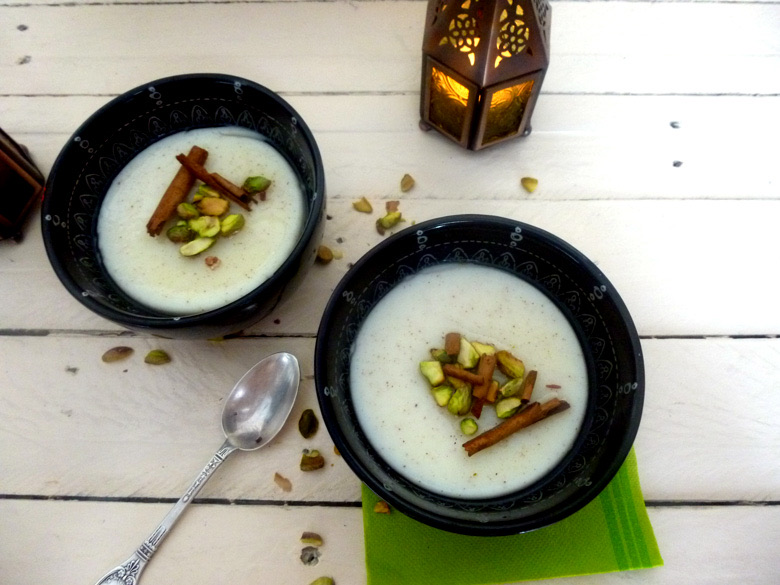
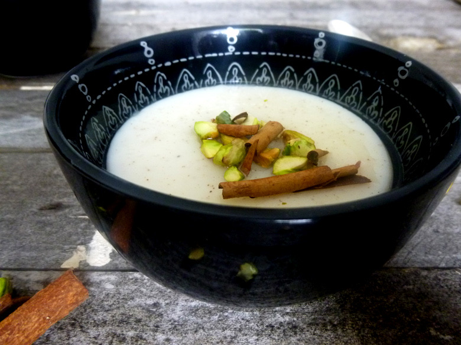

Muhallabieh

Je vous présente la recette du muhallabieh. Mais c’est quoi ça d’abord?
Il s’agit de ma recette pour la bataille Food qui est un défi culinaire lancé par Jenna du Bistro de Jenna qui réunit blogueurs & non blogueurs autour d’un thème commun très gourmand!
Le but de cette édition de la bataille food est de faire voyager vos papilles avec la cuisine du monde et/ou la cuisine de votre région et bien sûr le plat se devait d’être épicé et pas avec n’importe quelle épice!! Une épice commençant par un C.….
J’ai donc choisi de vous parler du « muhallabieh » dans lequel j’ai choisi de rajouter de la cannelle sur les conseils d’un connaisseur 🙂
Je pense que ce nom un peu barbare et pas facile à prononcer ne parle pas à grand monde. Pourtant, c’est un dessert très rapide, très simple à réaliser et surtout très bon!!
En Europe, le muhallabieh est apparenté à une panna cotta allégée.
Le muhallabieh désigne un entremets solide très cher aux Jérusalemites que j’ai découvert lors de mon voyage à Jérusalem. Il s’agit d’une préparation lactée, sucrée, parfumée et arrosée d’un délicieux sirop le plus souvent à l’eau de rose.
A Jérusalem, vous trouverez le muhallabieh servi autant dans de grands restaurants que par de simples vendeurs de rues.
Le muhallabieh est un dessert que vous pouvez garnir ou parfumer de ce qui vous fait envie.. Une fois la préparation lactée prête c’est à vous de choisir. Vous pouvez verser une salade de fruits dessus, incorporer de la noix de coco, du gingembre, des fruits rouges, de la fleur d’oranger etc… Vous l’aurez compris, thème oblige j’ai choisi de le préparer avec de la cannelle puis je l’ai ensuite arrosé généreusement d’un sirop à la fleur d’oranger!
Place à la recette!
Ingrédients
- Maizena - 50g
- Lait entier - 500 ml
- Sucre en poudre - 80g
- Eau - 200 ml
- Canelle en poudre - 1 càs (selon vos goûts)
- Sucre en poudre - 50g
- Eau - 50ml
- Eau de fleur d'oranger - 1càc (selon vos goûts)
- Bâton de canelle
- Pistaches concassées
Instructions
- Battre la Maïzena avec 100ml de lait et réserver ce mélange pour plus tard
- Dans une casserole, verser l'eau (200ml), le sucre en poudre, et le reste de lait (400ml)
- Faire chauffer à feu doux jusqu’à ce que le sucre soit totalement dissous
- Quand le mélange commence à être très chaud vous pouvez apercevoir de la vapeur s’échapper de la casserole (avant que le mélange ne frémisse) C'est à ce moment là qu'il faut ajouter le mélange maïzena-lait en fouettant
- Continuer de fouetter jusqu'à ce que le mélange soit en ébullition et commence à s'épaissir (ça me fait penser à la préparation d'une béchamel^^)
- Retirer du feu et ajouter la cannelle (ou autre selon vos goûts)
- Remuer pour que le mélange s’imprègne de la cannelle
- Verser dans des récipients de type bols, certains le verse dans une assiette ou encore dans des verres à vin! (moi je l'ai fait dans des bols et j'ai pu en remplir 5)
- Mettre au réfrigérateur environ 4h-5h jusqu’à ce que le mélange soit pris. Normalement vous devez couvrir à l'aide d'un film alimentaire la préparation (le film doit toucher la surface de l’entremets) pour éviter qu'une peau ne se forme. Je ne le fait pas car mon chéri (encore lui!!!!) adore particulièrement ce film qui se forme à la surface de la préparation
- Faire chauffer à feu doux le sucre et l'eau
- Ajouter l'eau de fleur d'oranger et laisser sur le feu jusqu'à ce que le sucre soit totalement dissous
- Retirer du feu et laisser refroidir
- Au moment de servir arroser l’entremets avec ce sirop


Les tips de la communauté
Dessert très original et excellent, bien accueilli comme découverte culinaire. Les photos sont très appétissantes. Recette surprise agréable qui surprend les lecteurs (certains pensaient d'abord que c'était salé). Base bien expliquée qui peut s'adapter à différentes saveurs.
Astuces
- Excellente base qui peut s'adapter avec différents fruits ou arômes
- Fruits frais recommandés pour une meilleure saveur
- Recette utilisée avec succès pour des participations à des émissions culinaires
Variantes suggérées
- Adapter avec différents fruits frais selon la saison